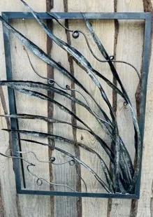

Andy Ball

Andy - Cerfluniau metel a deunydd cymysg o ffurfiau a lleoedd naturiol. Croesewir comisiynau.
Denise - Dyfrlliwiau ac acrylig o blanhigion a lleoedd.
Andy - Metal and mixed material sculptures of natural forms and places. Commissions welcome.
Denise - Watercolours and acrylics of plants and places
Andy: 07903672123 / Denise: 07943991972
9 RHYD MENAI, MENAI BRIDGE, LL59 5RG
Mae Rhyd Menai oddi ar yr A5, ger Garej Shell.
Mae parcio ar gael ar yr A5, nid yn Rhyd Menai.
Yn anffodus, mae mynediad i’r stiwdio i lawr grisiau uchel ac nid yw’n addas ar gyfer rhai sydd â phroblemau symudedd
Rhyd Menai is off the A5, near the Shell Garage.
Parking is available on the A5, not in Rhyd Menai. Unfortunately, access is down high rise steps and is not suitable for those with impaired mobility